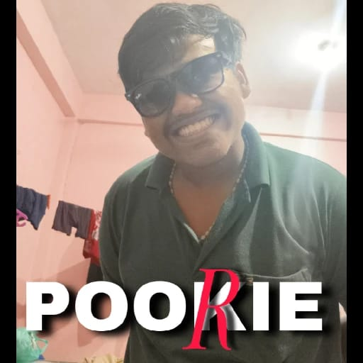
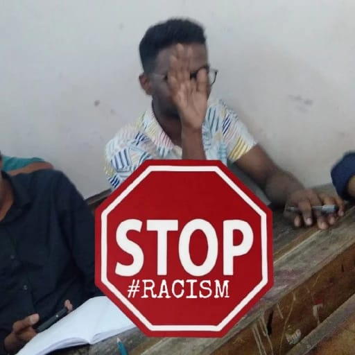

POOKIE

This Is the Pookie Of Learners Hostel UCE, THODUPUZHA ...He is known as Thrissur Pindam.....By the way,Check out Our work.
Real Name Clerat Os From Thrissur..PPL call him Thrissur Pindam aka pindadevan as he is the lord of pindam...Chubby pookie guy from AIDS,UCE
RACISM

Here is an protestor of racism in UCE...He is none other than ALBERT SONY
"Embracing diversity and promoting inclusivity is crucial in the fight against racism. By saying no to racism, we can create a society where everyone is treated with dignity and respect, regardless of their race, ethnicity, or background. It's time to break down barriers, challenge biases, and stand together against discrimination. Let's unite to build a world where equality, justice, and love prevail, and where everyone has the opportunity to thrive."----This is what albert has to say about Racism..Spread love.
Spread Love
THIS IS THE MOGGER OF UCE...knows as Alen Mogger...His mantra is to spread Love...Here is what he has to say about love..
"Spread love" is a powerful mantra that encourages us to cultivate kindness, compassion, and empathy towards others. By choosing to spread love, we can create a ripple effect of positivity that transforms lives and communities. It's about embracing diversity, forgiving freely, and showing understanding and acceptance. As we spread love, we can break down barriers, heal wounds, and build bridges of connection and unity.